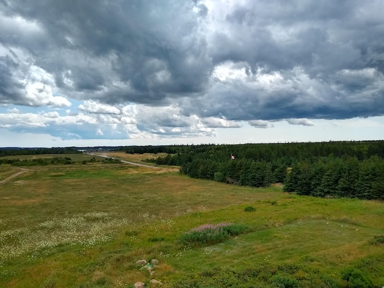
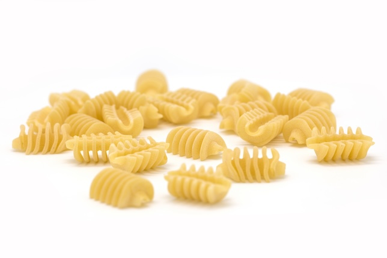
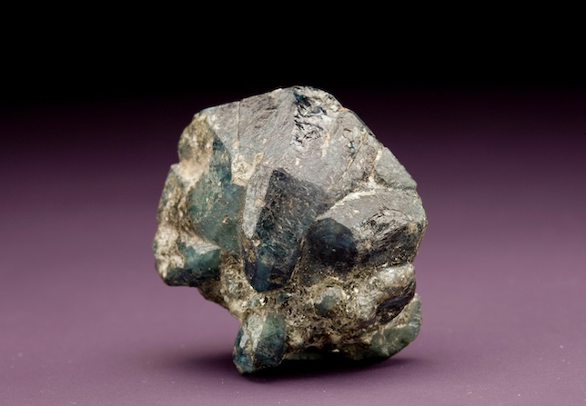

Image Exercise Page
Image 1 (Personally Taken)
I chose this image because I had it on hand, and it featured a different subject than the other two I found online. Could be used in an "about me" section.

Image 2 (Creative Commons)
I chose this image because it's of one of my favorite kinds of pasta. Could also be used in an "about me" section.

Image 3 (Public Domain/CC0?)
I chose this image because it's of a neat-looking rock, and I liked collecting rocks as a kid. Probably won't be used on my finished website though.
